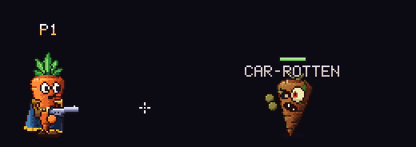
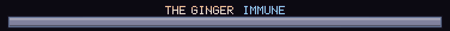

Enemy names and boss bars
Regular enemies wear their name over their head with a little health bar. Bosses get a big name-and-health bar at the bottom of the screen instead, which shows when they're shielded or partly locked.
Name tags
Every regular enemy shows its name just over its head, with a little health bar above the name.

The bar drains as it takes damage: green, then yellow, then red as it gets low. A white chip shows the last hits for a moment before it drains away. Bigger enemies get wider bars.Each enemy's name is set in styles/enemy_labels.tres, keyed by its kind (the zombie is
Car-Rotten, the asparagus Spear-Gus, and so on). The full list is under names in the parameters
at the bottom of this page.
Boss bars
Bosses don't wear a name tag. While a boss is alive, its name and a big health bar run across the bottom of the screen, just above the controls line. If several bosses are up at once, their bars stack upward. A white chip trails each hit, and below 0.25 of its health the bar pulses: the boss is nearly done.
Locked health
A boss whose health is gated (it can only be hurt so far until the squad does something) shows the locked part as a dark striped chunk on the right of its bar. Dividers mark where each step unlocks (3 steps). Damage can't eat into the locked part until it unlocks.
Immune
While a boss can't be hurt at all, its bar turns grey, the frame glows, and "IMMUNE" appears after its name.

Bullets that hit it show the same word instead of a damage number. See Damage.Your shield and health
Your own shield and health bars have the top centre of the screen. See Health.
Co-op
Name tags and boss bars follow the enemies' health as the host streams it, so everyone sees the same numbers.
For enemy makers
A new enemy needs its name added to names in styles/enemy_labels.tres, keyed by its kind.
Otherwise it shows its kind. A new boss also needs its kind added to bosses, or it gets a
name tag and a little bar like a regular enemy.
History
- Boss bars moved from the top of the screen to the bottom when the player's bars became a shield over health at the top.
Tunable parameters
These are read straight from the game's files, so they are always the current values. Open the file in the Godot Inspector to change them.
Names, tags and boss bars
Edit styles/enemy_labels.tres · fields defined in scripts/enemy_labels.gd
| Parameter | Value | Range | What it does |
|---|---|---|---|
names | { "zombie": "Car-Rotten", "pumpkin": "Jacko", "asparagus": "Spear-Gus", "mushroom": "Shroom", "corn": "Big Cobber", "potato": "Potato Bull", "pepper": "Hot Pepper", "sweet_potato": "Sweet Potato", "red_corn": "Red Corn", "ghost_pepper": "Ghost Pepper", "ginger": "The Ginger", "ginger_shade": "Ginger Shade", } | Enemy kind (a key of Level.KINDS) -> the name shown for it. Kinds missing here show their key. | |
bosses | ["sweet_potato", "red_corn", "ghost_pepper", "ginger"] | Kinds that are bosses: no name tag or little bar, a big bar at the bottom of the screen instead. | |
| Name tag | |||
tag_color | #f4e8d8 | ||
tag_top | #ffffff | The top rows of the letters (a gradient down to tag_color). | |
tag_alpha | 0.85 | 0 to 1 | |
tag_gap | 2 px | 0 to 24 | Pixels between the top of the enemy and the bottom of its name. |
bar_gap | 1 px | 0 to 12 | Pixels between the name and the little health bar above it. |
| Boss bar | |||
boss_bar_width | 360 px | 60 to 900 | |
boss_bar_height | 7 px | 2 to 24 | |
boss_bar_bottom | 18 px | 0 to 120 | From the bottom of the screen to the bottom of the lowest boss bar (clear of the controls line). |
boss_bar_spacing | 26 px | 10 to 80 | From one boss's name to the next one's, when several are up at once. |
boss_fill | #d8344a | ||
boss_fill_top | #ff8a96 | The bright top rows of the fill. | |
boss_low | 0.25 | 0 to 1 | Below this fraction of its health the fill pulses (the boss is nearly done). |
boss_name_color | #f4e8d8 | ||
boss_name_top | #ffd0a0 | ||
boss_chip_speed | 0.35 | 0.05 to 3 | How fast the white chip of the last hits drains (fraction of the bar per second). |
| Boss bar / Locked and immune | |||
boss_locked_fill | #2a2236 | The part of a boss's health that can't be hurt yet (its boss_locked()), on the right of the bar. | |
boss_locked_stripe | #5a4a70 | The diagonal stripes over the locked part. | |
boss_locked_stripe_gap | 4 px | 2 to 16 | Pixels between stripes. |
boss_lock_steps | 3 | 1 to 8 | The bar is split into this many equal chunks that unlock one at a time (dividers drawn between them while any of it is locked). 1 = no dividers. |
boss_divider | #140a1c | ||
boss_immune_fill | #8a8aa8 | While the boss is immune(): its fill turns this colour and the frame glows. | |
boss_immune_edge | #9ad8ff | ||
boss_immune_text | IMMUNE | The word shown after the boss's name while it's immune (empty for none). | |
boss_immune_text_color | #9ad8ff | ||